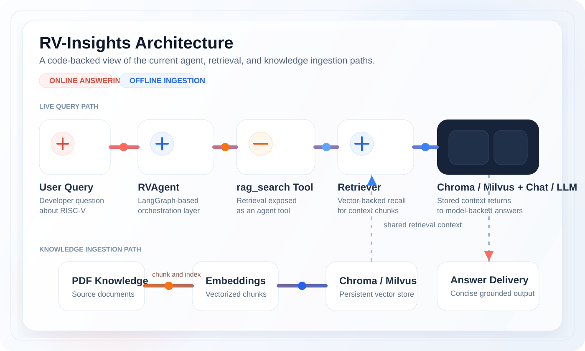
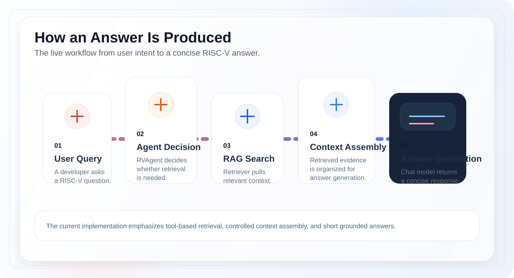

面向开发者与研究者的 RISC-V 智能问答系统 A focused RISC-V Q&A system for developers and researchers
面向 RISC-V 的智能问答与检索系统 An intelligent Q&A and retrieval system for RISC-V
聚焦 RISC-V 专业知识问答、私有知识库检索与实时联网检索，帮助开发者更快获得可追溯、可扩展的答案。 Built for RISC-V knowledge Q&A, private retrieval, and web-assisted answers with a code-backed architecture and flexible model stack.
- RISC-V Expert QA
- Private RAG Workflow
- Real-Time Web Retrieval
- Chroma / Milvus


可信度来自仓库文档与代码结构 Proof built from repository docs and code paths
当前项目已经具备的核心信号 What the current repository already proves
RISC-V Expert QA
Private RAG Workflow
Real-Time Web Retrieval
Chroma / Milvus
Multi-LLM Integration
Docker Deployment Support
01
RISC-V 专家问答 RISC-V Expert Q&A
覆盖 ISA 解释、技术问题解答、排障分析与环境搭建指导。 Covers ISA explanation, technical issue resolution, debugging, and environment guidance.
02
私有知识库检索 Private Knowledge Retrieval
支持 Markdown 与 PDF 等资料接入，并通过 RAG 提升回答相关性。 Supports private Markdown and PDF ingestion with RAG-enhanced answer quality.
03
联网增强回答 Web-Enhanced Answers
结合实时联网检索与向量召回，补足静态知识边界。 Combines live web retrieval and vector recall to extend beyond static project knowledge.
04
灵活基础设施栈 Flexible Infra Stack
当前代码已体现多模型接入与 Chroma / Milvus 双向量库选择。 The current code already exposes multi-model support and a Chroma / Milvus vector-store choice.
真实代码驱动的系统架构 A code-backed system architecture
围绕 RVAgent、RAG 检索与向量数据库的当前实现 The current implementation centers on RVAgent, RAG retrieval, and vector stores
图中只保留仓库里已经能被 README 与 server 代码支撑的节点，不引入未落地的 Web 控制台或额外服务层。 Only repository-backed components are shown here, without inventing a finished web console or API layer.

一次回答如何生成 How an answer is produced
从用户问题到精简回答的工作流 From user query to a concise grounded answer

User Query
问题从 RISC-V 语义场景出发，而不是泛化聊天。 Questions begin in a RISC-V-specific problem space, not a generic chat flow.
Agent Decision
由 RVAgent 决定是否调用 `rag_search` 工具并触发检索。 RVAgent decides when to call `rag_search` and pull supporting context.
Context Assembly
上下文拼装后交给模型生成简洁结果，保持答案可控且聚焦。 Context is assembled before the model generates a concise, focused response.
能力拆解 Capability map
首页应该强调的不是“什么都能做”，而是“这些能力已经有根基” The goal is not to claim everything, but to show what already has technical footing
ISA Explanation
帮助理解 RISC-V 指令集、用法与最佳实践。 Explains RISC-V ISA usage, semantics, and best practices.
Debugging Support
面向技术问题、错误排查与调试分析的问答支持。 Supports troubleshooting, debugging, and technical issue analysis.
Environment Guidance
覆盖 Linux、QEMU、KVM 等常见环境搭建指引。 Covers setup guidance across Linux, QEMU, KVM, and related environments.
Markdown / PDF Ingestion
支持将 Markdown 与 PDF 资料纳入后续检索增强流程。 Brings Markdown and PDF sources into the retrieval pipeline.
RAG Pipeline
以检索器、向量库、嵌入模型与提示拼装构成完整链路。 Combines retrievers, vector stores, embeddings, and prompt assembly into a retrieval stack.
Evaluation & Deployment
README 已明确评测链路与 Docker 部署方向。 README-backed positioning already includes evaluation flow and Docker deployment support.
Quick Start
从仓库拉取代码并安装依赖，即可开始本地验证 Clone the repository and install dependencies to explore the current stack locally
01
获取代码 Clone the repo
直接从 GitHub 拉取 `RV-Insights` 仓库。 Pull the repository directly from GitHub.
02
安装 Python 依赖 Install Python dependencies
当前后端能力主要落在 Python `server/` 模块。 The current runtime center is the Python `server/` module.
03
验证首页结构 Verify the homepage shell
本页作为独立静态官网落在 `web/`，可直接本地预览。 The homepage lives as a standalone static site inside `web/` and can be previewed locally.
bash
GitHub
git clone https://github.com/zcxGGmu/RV-Insights.git
cd RV-Insights
python -m pip install -r requirements.txt
python -m unittest web.tests.test_homepage_structure -v演示预览 Demo preview
当前使用概念预览图占位，后续可替换为真实录屏或产品演示视频 Placeholder visuals stand in for future demos and can later be replaced with recordings or product walkthroughs
RISC-V Expert Q&A
Private Knowledge Retrieval